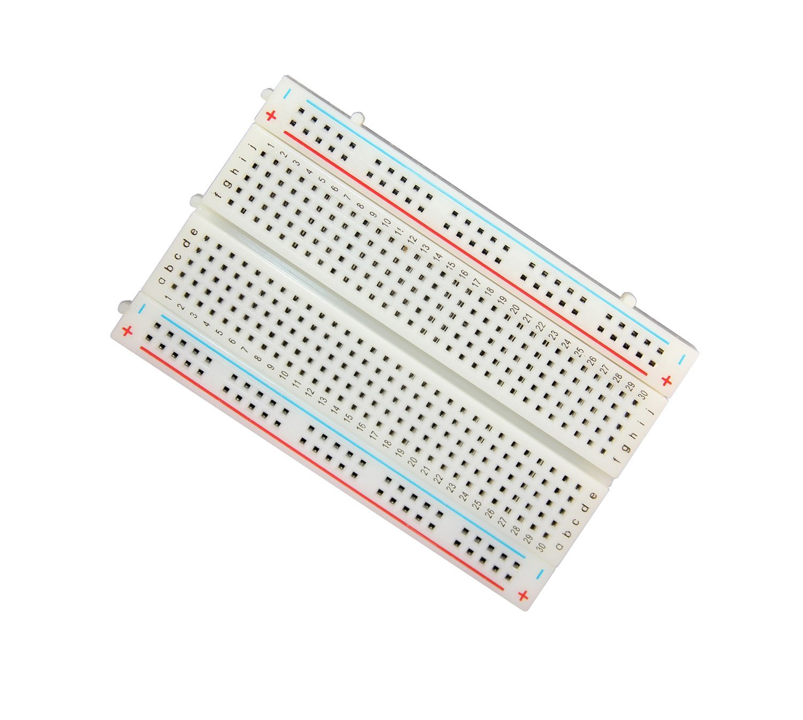
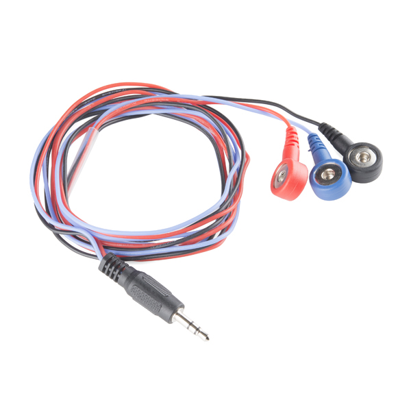
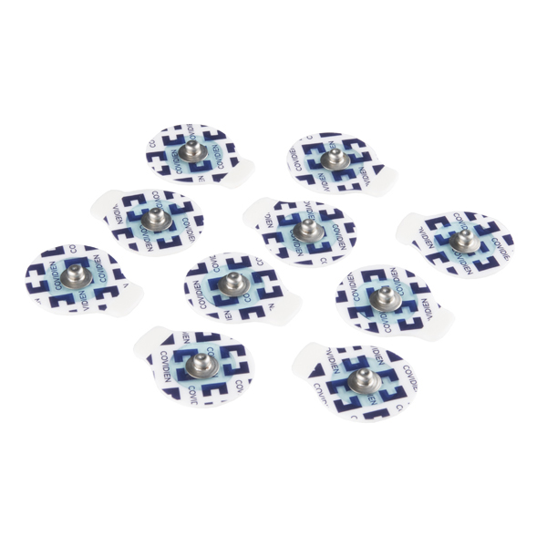

How it's done?
This ECG Heart Monitoring System is a final project for a Microcomputer Apps. It uses a microcontroller which is a small computer with low-memory and programmable input/output peripherals.
Process
There are multiple parts or components for this project. This home monitoring system is composed of:
- Arduino board.
- AD8232 Heart Monitor Module.
- Breadboard. 
- 3 Lead Electrode Sensor Cable. 
- Electrode pads. 


Solutions
The ECG Monitoring system is not for treatment, rather for diagnosis. It will help reduce fatality of heart attack by notifying emergency contacts and authorities once abnormalities or irregularities are observed by the system.
First, the ECG will take data continuously. Once the abormalities or irregularities are observed, the system will verify if this is a legitimate heart activity or is it just some movement by analyzing the data. If it is a legitimate heart activity, and it continues for a certain period of time, it will send a notification to an emergency contact and patient's doctor. Then if it still persist for longer period of time, then it'll send notification to 911 including the GPS location of the patient.